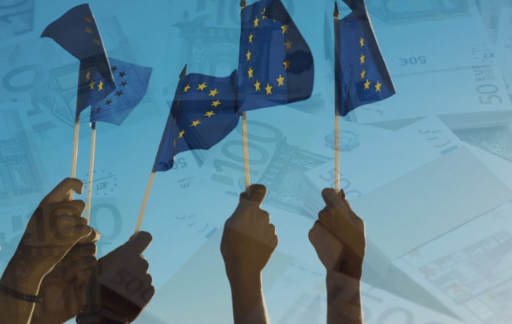

Investment in Open Banking Leaves the U.S. BehindLa inversión en Open Banking deja atrás a EE. UU.
Open Banking has changed the game, building investor trust and driving a surge of funding into fintech, especially for PayTechs.El Open Banking ha cambiado las reglas del juego, ha generado confianza entre los inversores e impulsado una oleada de financiación hacia las fintech, sobre todo hacia las PayTech.

Regulation has a reputation for slowing things down. More compliance, more costs, more friction for smaller players trying to enter a market. In Europe’s fintech sector, the data tells a different story.
Since PSD2 came into force, fintech investment in Europe grew at 13% annually between 2015 and 2023, reaching $5.6 billion. That growth was not evenly distributed across all fintech categories. PayTechs, the companies built around payment services, captured a disproportionate share of that capital. The reason is not hard to see. PSD2 gave them something investors value above almost everything else, a regulatory framework that reduced uncertainty. When the rules are clear and access to banking infrastructure is guaranteed by law, building a business on top of it becomes a much safer bet. 1
The mechanism behind this is worth understanding. PSD2 required banks to open their APIs to authorized third parties, which meant that a fintech in Spain could access the same payment infrastructure as Santander. Combined with Europe’s passporting system, which allows a company licensed in one EEA country to operate across the entire region without additional licenses, the market suddenly became much larger for anyone willing to comply with the regulation. Over 400 non-bank providers have emerged in the EU since then, many of them smaller fintechs that would have had no realistic path to market under the old system.
The contrast with the United States is significant. Without a federal mandate for data sharing, access to banking infrastructure in the U.S. remains largely negotiated between dominant players. Smaller fintechs depend on partnerships that established institutions can revoke, restrict, or price out of reach. The market is innovative, but it is not open in the same structural sense.
Europe is already moving to the next phase. PSD3 and the Financial Data Access Regulation (FiDA) are extending the same logic beyond payments to insurance, investments, and pensions. The direction is clear. Financial data is becoming shared infrastructure, not private property. Whether other regions follow, or continue watching from the side, will define who leads the next decade of financial services.
- Data supporting regional comparisons exclude any potential influences and focus solely on the impact of PSD2 following its implementation. I will include data in upcoming posts. ↩︎
La regulación tiene fama de frenar las cosas. Más cumplimiento, más costes, más fricción para los actores pequeños que intentan entrar en un mercado. En el sector fintech europeo, los datos cuentan otra historia.
Desde la entrada en vigor de PSD2, la inversión en fintech en Europa creció un 13 % anual entre 2015 y 2023, hasta alcanzar los 5.600 millones de dólares. Ese crecimiento no se repartió por igual entre todas las categorías fintech. Las PayTech, las empresas construidas en torno a los servicios de pago, captaron una parte desproporcionada de ese capital. La razón no es difícil de ver. PSD2 les dio algo que los inversores valoran casi por encima de todo, un marco regulatorio que redujo la incertidumbre. Cuando las reglas son claras y el acceso a la infraestructura bancaria está garantizado por ley, construir un negocio sobre ella se convierte en una apuesta mucho más segura. 1
Merece la pena entender el mecanismo. PSD2 obligó a los bancos a abrir sus APIs a terceros autorizados, lo que significaba que una fintech en España podía acceder a la misma infraestructura de pagos que el Santander. Junto con el sistema de pasaporte europeo, que permite a una empresa autorizada en un país del EEE operar en toda la región sin licencias adicionales, el mercado se volvió de repente mucho más grande para cualquiera dispuesto a cumplir la regulación. Desde entonces han surgido en la UE más de 400 proveedores no bancarios, muchos de ellos fintechs pequeñas que con el sistema anterior no habrían tenido una vía realista para llegar al mercado.
El contraste con Estados Unidos es notable. Sin un mandato federal de intercambio de datos, el acceso a la infraestructura bancaria en EE. UU. sigue negociándose en gran medida entre los actores dominantes. Las fintechs pequeñas dependen de alianzas que las entidades consolidadas pueden revocar, restringir o encarecer hasta hacerlas inalcanzables. El mercado es innovador, pero no está abierto en el mismo sentido estructural.
Europa ya está pasando a la siguiente fase. PSD3 y el Reglamento de Acceso a Datos Financieros (FiDA) extienden la misma lógica más allá de los pagos, a los seguros, las inversiones y las pensiones. La dirección es clara. Los datos financieros pasan a ser infraestructura compartida, no propiedad privada. Que otras regiones sigan este camino, o continúen observando desde la banda, determinará quién lidera la próxima década de los servicios financieros.
- Los datos que sustentan las comparaciones regionales excluyen cualquier posible influencia y se centran únicamente en el impacto de PSD2 tras su implementación. Incluiré datos en próximas publicaciones. ↩︎